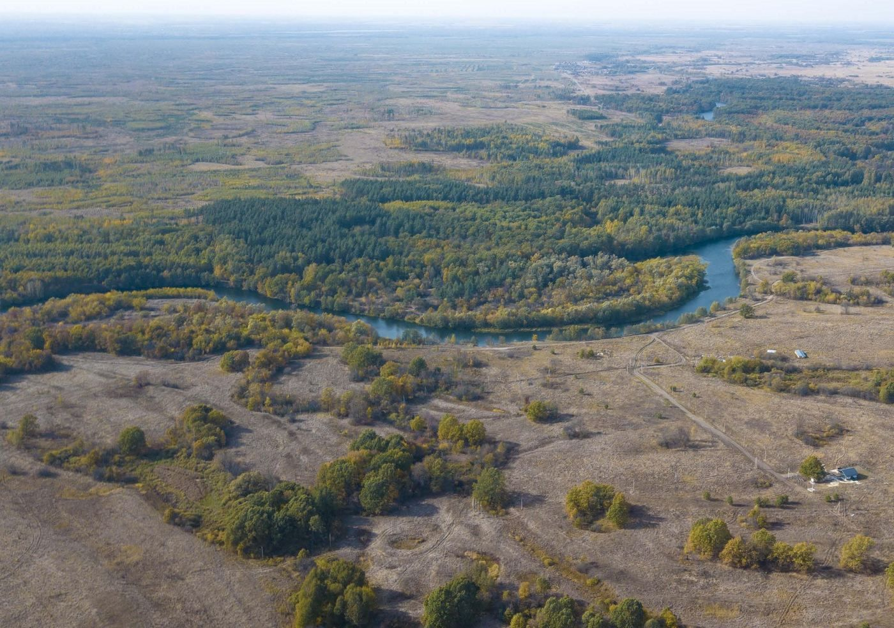
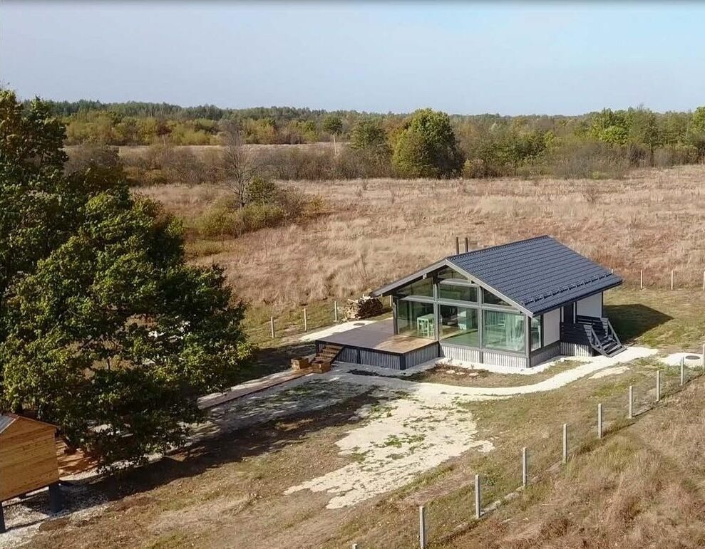
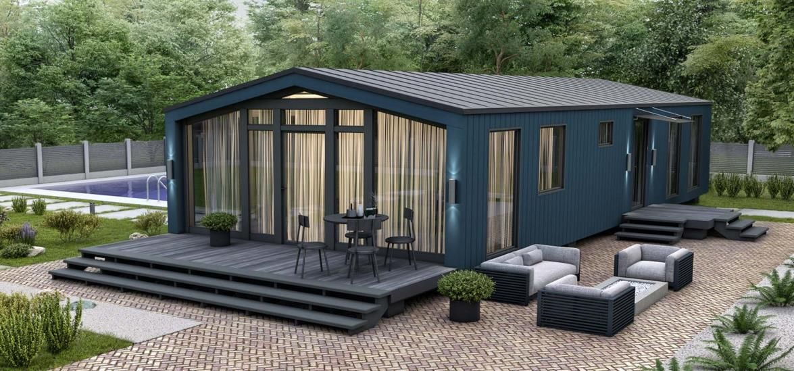
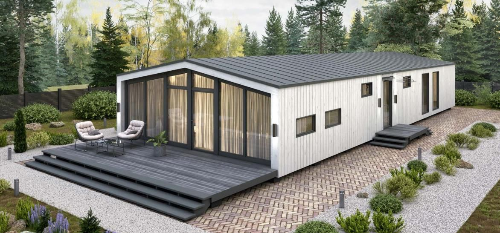
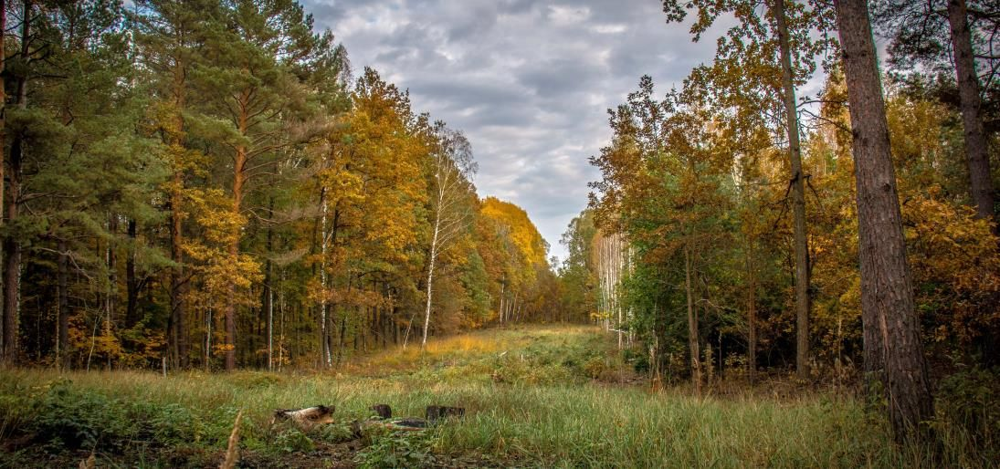
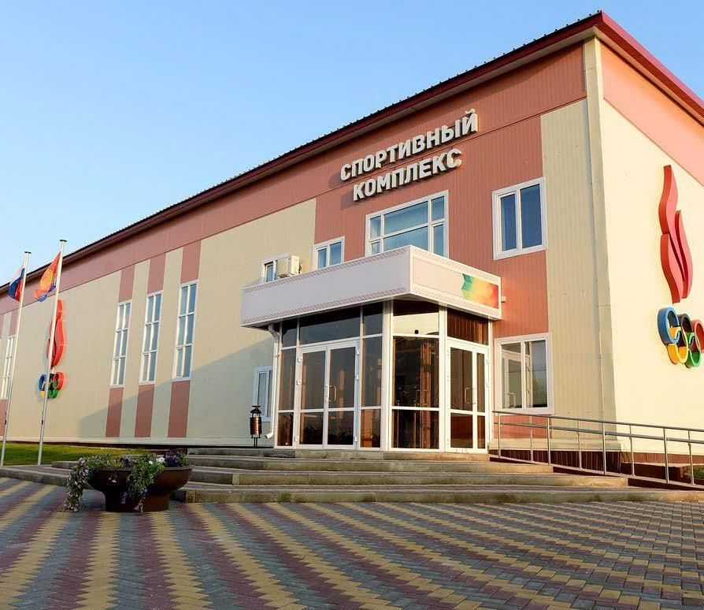
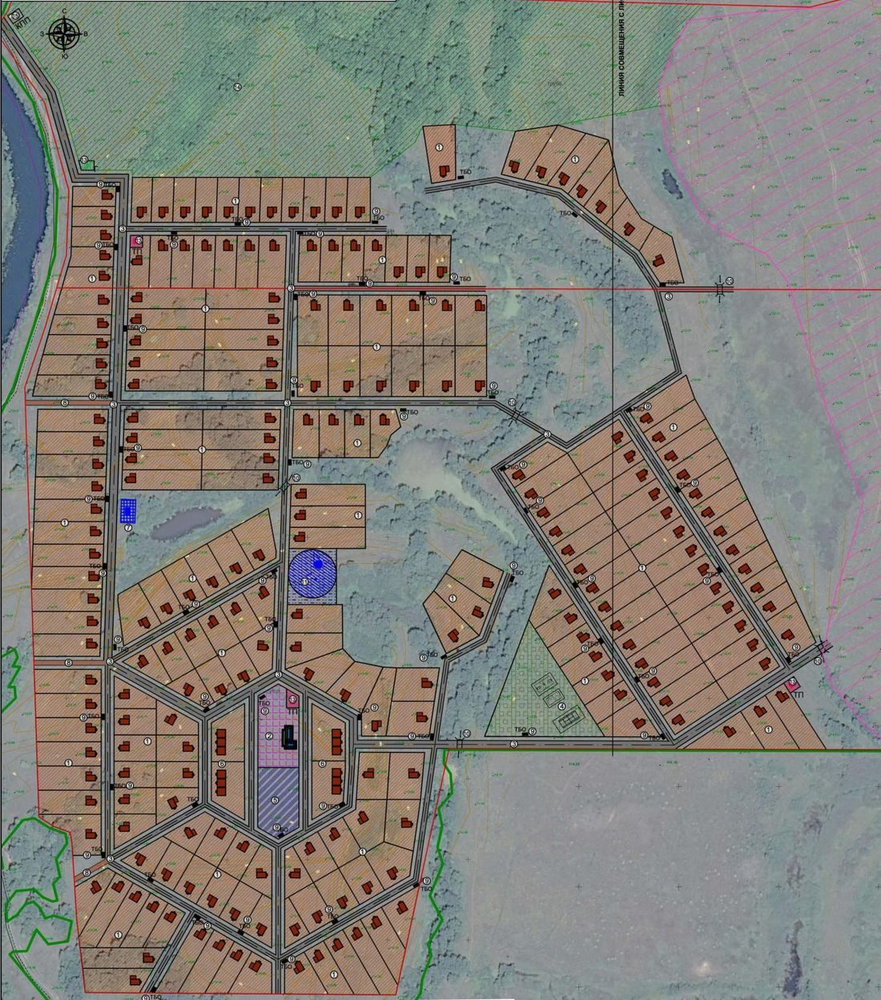

Посёлок из современных деревянных домов среди леса и реки — для постоянной жизни, дачи выходного дня или загородного отдыха. Своя пляжная зона, единый архитектурный код, участки от 12 соток.
Мы создаём атмосферный современный посёлок со старыми традициями — там, где соседи знают друг друга, а общие ценности важнее заборов. Здоровье, семья, дружба, доброта, любовь, забота, доверие, свобода.

Одно- и двухэтажные деревянные дома площадью от 31 до 134 м² — фахверк, Barn House, Hi-Tech. Технология: модульная, CLT и CLT Thermo. Отделка «под ключ» с кухней — заезжаете с мебелью.



Заборы — открытые, высотой 1,2 м, в едином цвете (3D RAL 7024): сохраняют границы участка, но не разбивают посёлок на закрытые дворы. Для благоустройства участков разработано 18 вариантов ландшафтного дизайна, а 70% территории посёлка остаётся зелёной.
54 000 га леса вокруг — сосна, ель, дуб. Более 30 озёр и прудов, исток реки Воронеж рядом с посёлком. Самый экологически чистый район Липецкой области, вдали от трасс и промышленности.
Рядом растёт более 1000 дубов возрастом 50–100 лет — дуб стал символом «Возрождения»
Лиса, лось, кабан, олень, косуля, бобр, выхухоль; сокол, аист, журавли, сова, филин, скопа, глухарь, цапля. Дуб, клён, ясень, липа, осина, берёза, ель, сосна. Белые грибы, подберёзовики, опята, черника, земляника, клюква.

Село Преображеновка в 2011–2020 гг. шесть раз признавалось победителем всероссийского конкурса на самое благоустроенное сельское поселение России (категория — населённые пункты до 400 жителей). Это готовая социальная инфраструктура в шаговой доступности, а не изолированное поле.

Два видео с площадки — включите звук и посмотрите, как выглядит место сегодня.

Общая площадь жилой застройки — 48 га, 227 участков размером 12–25 соток. Дома — деревянные, в едином стиле, площадью 36–180 м². Внутри посёлка — асфальтированные дороги и тротуары из брусчатки, 3 пляжа с дорожками для прыжков в воду и тарзанкой, площадка для пляжного волейбола.
Строительство и благоустройство территории регулируются проектом планировки и застройки (ПЗЗ) села Преображеновка — документ сохраняет единую концепцию посёлка.
Оставьте номер телефона или мессенджер — перезвоним и расскажем о доступных участках.